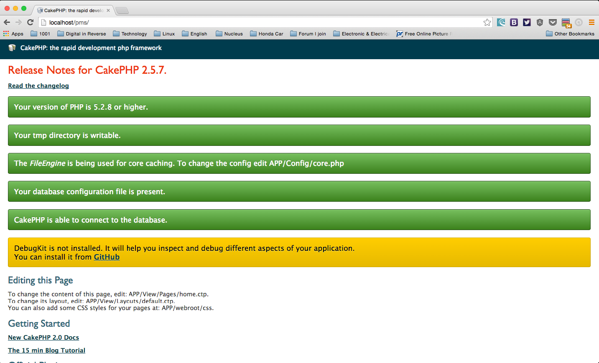
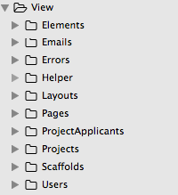

Bab Pengenalan : Objektif
Objektif modul panduan ini adalah untuk memberi panduan kepada para pembangun PHP yang baru bermula menggunakan CakePHP Framework untuk membina sebuah aplikasi web yang mempunyai fungsi Bina(Create), Baca(Read), Kemaskini(Update), Padam(Delete) atau pendek kata CRUD.
Modul panduan ini merangkumi:
- Pengenalan ringkas CakePHP Framework.
- Pemasangan CakePHP pada stesen kerja local.
- Pemasangan CakePHP Console & Shell.
- Membina sebuah aplikasi CakePHP - Project Management System.
- Menjana struktur aplikasi dan kod sumber (Source Code) menggunakan Cake Bake Console.
- Membina fungsi log masuk dan log keluar
Bab Pengenalan : Keperluan
Untuk mengikuti panduan ini. Anda perlu mempunyai asas dan pengalaman dalam pembangunan web seperti :
- Mempunyai asas HTML,CSS,dan Javascript.
- Mempunyai asas OOP (Object Oriented Programming).
- Boleh membina modul Create Read Update Delete (CRUD)
menggunakan PHP dan MySQL - Boleh mereka bentuk struktur dan skema pengkalan data (Databases) menggunakan SQL.
- Boleh menggunakan alat pengurusan pengkalan data
(Database Administration Tools) seperti PhpMyAdmin, Adminer, PhpMiniAdmin, Sqlyog, Sequel Pro, dll.
Bab 1. Pengenalan ringkas CakePHP Framework.
Bab 1.1. Model
Fungsi model secara ringkas adalah komponen yang akan berinteraksi dengan pangkalan data. Model ditugaskan untuk menerima, menghantar, dan memanipulasi bisnes data logik diantara pangkalan data dan controller. Sebagai contoh, setiap SQL query yang dijalankan haruslah diletakkan didalam model supaya informasi data dapat dikapsulkan dan disembunyikan (Data encapsulation and information hiding).
Bab 1.2. Controller
Fungsi controller secara ringkas adalah komponen untuk mengawal permintaan dan perjalanan sesuatu aplikasi. Controller ditugaskan untuk mengawal atau menjadi "orang tengah" antara view dan model. Sebagai contoh, apabila anda membuka url facebook.com,komponen controller akan memproses dan menghantar permintaan anda, dan paparan Home Page facebook.com akan muncul.
Bab 1.3. View.
Fungsi view secara ringkas adalah komponen untuk memaparkan data dan paparan antaramuka grafikal (GUI). View ditugaskan untuk memaparkan paparan data atau paparan antaramuka grafikal yang dihantar melalui controller yang kemudiannya membolehkan pengguna berinteraksi dengan aplikasi. Sebagai contoh, anda mengisi borang daftar di facebook.com, borang itu adalah elemen HTML yang dipaparkan dari komponen view.
Bab 2. Pemasangan CakePHP pada stesen kerja local
(Local Workstation/Localhost)Untuk memulakan pembelajaran anda perlu memuat turun CakePHP Framework versi 2.0 dan ke atas. Muat turun CakePHP Framework di https://github.com/cakephp/cakephp/tags. Modul panduan ini akan menggunakan CakePHP 2.5.7.
Gambar rajah di bawah menunjukkan struktur direktori CakePHP yang dimuat turun tadi
| Direktori Penerangan | ||
|---|---|---|
| app | Fail aplikasi anda | |
| lib | Kod sumber atau enjin CakePHP tersimpan disini. | |
| plugins | Untuk menyimpan CakePHP plugins | |
| vendors | Untuk menyimpan third-party PHP Libraries | |
Bab 2.1.1 Pemasangan di Windows
Jika anda menggunakan XAMPP sila ikut langkah di bawah:
Pergi ke fail zip cakephp yang anda muat turun tadi. Ekstrak dan copy direktori cakephp ke
direktori htdocs
Contoh :
C:\xampp\htdocs\cakephp Direktori Cake anda
atau
C:\xampp\htdocs\cakephp-2.5.7 Direktori Cake anda
Bab 2.1.2 Pemasangan di Windows
Jika anda menggunakan WAMP sila ikut langkah di bawah:
Pergi ke fail zip cakephp yang anda muat turun tadi. Ekstrak dan copy direktori cakephp ke
direktori www
Contoh :
C:\xampp\htdocs\cakephp Direktori Cake anda
atau
C:\xampp\htdocs\cakephp-2.5.7 Direktori Cake anda
Bab 2.1.3 Pemasangan di Windows
Jika anda menggunakan pakej server selain dari yang diatas, anda cuma perlu mencari document root directory server anda dan copy & paste direktori cakephp tadi.
Bab 2.2. Pemasangan di Linux/*nix.
Pergi ke fail zip cakephp yang anda muat turun tadi. Ekstrak dan copy direktori cakephp ke
direktori Document Root .
Contoh:
RHEL/Fedora/Centos: /var/www/html/cakephp Direktori Cake anda
Debian/Ubuntu : /var/www/cakephp Direktori Cake anda
Bab 2.3. Pemasangan di OSX.
Jika anda pengguna XAMPP sila ikut langkah di bawah:
Pergi ke fail zip cakephp yang anda muat turun tadi. Ekstrak dan copy direktori cakephp ke
direktori htdocs.
Contoh:
/Applications/XAMPP/htdocs/cakephp Direktori Cake anda
Jika anda menggunakan pakej server selain dari yang diatas, anda cuma perlu mencari document
root directory server anda dan copy & paste direktori cakephp tadi.
Bab 3. Pemasangan CakePHP Console & Shell.
Kelebihan CakePHP Framework bukan sahaja untuk digunakan sebagai web framework tetapi ia juga boleh digunakan untuk membina Console Application. Kelebihan konsol ini adalah seperti mengendalikan pelbagai tugasan seperti penyelenggaraan, dan menjana kod sumber untuk HTTP request & response cycle.
Shell-shell yang terdapat di dalam aplikasi konsol ini antaranya adalah bake,acl,api,i18n,schema,dan banyak lagi. Anda juga boleh membina shell anda sendiri kelak.
Peringatan!
Untuk menggunakan CakePHP Console & Command , anda perlu memasang PHP CLI terlebih
dahulu.
Rujuk: http://www.php-cli.com/
Bab 3.1. Windows
Cara memasang Cake Console CLI1.Pergi ke Start Control Panel System and Security Advanced system settings Advanced Enviroment Variables cari PATH dan klik Edit.
2. Anda perlu menambah path ke direktori CakePHP yang anda muat turun tadi ke Variable Value.
Contoh path yang akan ditambah: C:\xampp\htdocs\cakephp-2.5.7\lib\Cake\Console.

Bab 3.2. Linux/*nix.
Cara memasang Cake Console CLI1.Buka terminal dan jalankan arahan(command) ini:
~$ vi ~/.bashrc2. Tambahkan kod ini :
export PATH="$PATH:/var/www/html/cakephp/lib/Cake/Console"
// atau
export PATH="$PATH:/var/www/cakephp/lib/Cake/Console"Bab 3.3. OSX.
Cara memasang Cake Console CLI1.Buka terminal dan jalankan arahan(command) ini:
~$ vi ~/.bashrc
// atau
~$ vi ~/.bash_profile
2. Tambahkan kod ini :
export PATH="$PATH:/var/www/html/cakephp/lib/Cake/Console"
// atau
export PATH="$PATH:/var/www/cakephp/lib/Cake/Console"
Untuk mengetahui samada cake console berjaya dipasang pada variable path, jalankan command berikut:
cakeBab 4. Membina sebuah aplikasi CakePHP.
Kita akan membina sebuah aplikasi web iaitu Sistem Pengurusan Projek atau Project Management System. Ciri-ciri dan fungsi yang ada pada sistem adalah:
- Menambah,kemaskini, dan menghapus Projek.
- Membuat perhubungan antara ahli(Users) untuk setiap satu projek.
- Seorang ahli akan mempunyai banyak projek.
- Satu projek akan mempunyai banyak ahli yang menyertai.
- Fungsi Log keluar & Log masuk (Login & Logout Function)
Untuk modul panduan ini,kita akan menggunakan kelebihan CakePHP Console & Shell untuk mencipta prototaip aplikasi CakePHP ini dengan lebih pantas dan berkualiti.
Bab 5. Menjana struktur aplikasi menggunakan Cake Bake Console.
CakePHP Bake Console adalah satu lagi usaha untuk mencipta aplikasi CakePHP dengan pantas. Bake dapat membina satu aplikasi yang boleh terus berfungsi dalam masa beberapa minit sahaja. Bake console akan mencipta fail untuk model,view dan controller beserta kod sumber fungsi asas seperti index,view,add,edit,dan delete di dalam controller.
Untuk menjana atau mencipta struktur aplikasi Cake menggunakan Bake Console, sila taip arahan di bawah di terminal/cmd anda.
cake bakePaparan seperti dibawah akan muncul
*Sila pastikan anda berada di dalam document root server yang betul.
Contoh:
Jika anda menggunakan Linux, anda perlu berada di /var/www/html/ atau /var/www/.
Jika anda menggunakan XAMPP di OSX, anda perlu berada di /Applications/XAMPP/htdocs/.
Jika anda menggunakan XAMPP di windows, anda perlu berada di C:\xampp\htdocs.
Ikut arahan di bawah ini untuk langkah seterusnya.
S = Soalan | J = Jawapan
S:What is the path to the project you want to bake?
Jika anda menggunakan Linux/OSX, sila letakkan nama aplikasi yang anda mahu.
Untuk modul panduan ini saya menggunakan nama pms untuk aplikasi pengurusan projek ini.
Skel Directory: /Aplications/XAMPP/xamppfiles/htdocs/cakephp/lib/Cake/Console/Templates/skel
Will be copied to: /var/www/html/pms
-------------------------------------------------------
Look okay? (y/n/q)
[y] > _ J: Taip "y" untuk yes.
Tukar lokasi direktori anda sekarang dan masuk ke direktori aplikasi yang baru kita cipta tadi iaitu direktori pms
cd pms// Linux/OSX
ls –la
// Windows
dir| Penerangan struktur direktori dan fail. | |
|---|---|
| Config | Menyimpan (beberapa) fail konfigurasi CakePHP , maklumat sambungan pangkalan data,dan beberapa fail yang penting. |
| Console | Mengandungi arahan dan tugas untuk Cake Console & Shell. |
| Controller | Mengandungi fail controller untuk aplikasi anda |
| Index.php | Fail untuk bootstrapping aplikasi anda. |
| Lib | Mengandungi libraries yang bukan dari 3rd parties vendor. |
| Locale | Menyimpan baris bahasa untuk tujuan pelbagai bahasa dalam satu aplikasi |
| Model | Mengandungi fail model untuk aplikasi anda |
| Plugin | Pakej plugin disimpan disini |
| Test | Menyimpan fail test case dan test fixtures untuk tujuan unit test ke atas aplikasi anda |
| tmp | Disini CakePHP menyimpan data sementara(temporary data) seperti error log,cookies,session,dll. |
| Vendor | 3rd parties class atau libraries disimpan disini |
| View | Mengandungi fail view untuk aplikasi anda |
| webroot | Menyimpan fail CSS,Javascript,Image,dll |
| .htaccess | Untuk melakukan apache url rewriting. |
Nota peringatan !
Jika anda sudah mempunyai direktori aplikasi, anda harus menggunakan
Cake Console & Command didalam direktori aplikasi anda. Sebagai
contoh,jika direktori aplikasi anda bernama "pms", anda perlu
menjalankan arahan cake bake didalam direktori "pms" bukan di luar dari
direktori "pms".
Bab 5.1. CakePHP Skema & Model
Kelebihan model didalam cakephp adalah ia kemampuan model membuat perhubungan dan pemetaan objek atau Object Relational Mapping(ORM). Untuk melakukan perhubungan ini, kita perlu menggunakan penyatuan model (Association).
Jenis Perhubungan (Relationship Type)
| Perhubungan(Relationship) | Jenis Penyatuan (Association Type) | Contoh |
|---|---|---|
| one to one | hasOne | Satu pengguna sistem mempunyai satu projek. |
| one to many | hasMany | Satu projek mempunyai banyak ahli. |
| many to one | belongsTo | 10 projek mempunyai satu ahli. |
| many to many | hasAndBelongsToMany (HABTM) | 10 projek mempunyai 10 ahli dan sebaliknya. |
Untuk aplikasi pengurusan projek ini kita akan menggunakan perhubungan
belongsTo, dan hasMany. Perhubungan model ini adalah seperti berikut:
Projects hasMany Project Applicants
Users hasMany ProjectApplicants
Project Applicants belongsTo Projects
Project Applicants belongsTo Users
Table yang perlu ada :-
projects : untuk menyimpan data projek.
users : untuk menyimpan data pengguna/ahli.
project_applicants : untuk menyimpan data ahli yang menyertai projek.
Rujuk gambarajah dibawah untuk memahami ERD pangkalan data aplikasi ini.
Untuk membina table pangkalan data tadi. Sila copy skrip arahan MySQL di bawah & paste ke MySQL DBA Tool yang anda gunakan contohnya phpmyadmin:
CREATE TABLE `projects` (
`id` int(11) unsigned NOT NULL AUTO_INCREMENT,
`user_id` int(11) NOT NULL,
`name` varchar(255) NOT NULL DEFAULT '',
`details` varchar(255) NOT NULL DEFAULT '',
`start_date` datetime NOT NULL,
`end_date` datetime NOT NULL,
`created` datetime DEFAULT NULL,
`modified` datetime DEFAULT NULL,
PRIMARY KEY (`id`)
) ENGINE=InnoDB AUTO_INCREMENT=3 DEFAULT CHARSET=latin1;
CREATE TABLE `project_applicants` (
`id` int(11) unsigned NOT NULL AUTO_INCREMENT,
`project_id` int(11) NOT NULL,
`user_id` int(11) NOT NULL,
`created` datetime DEFAULT NULL,
`modified` datetime DEFAULT NULL,
`created_by` int(11) DEFAULT NULL,
`modified_by` int(11) DEFAULT NULL,
PRIMARY KEY (`id`)
) ENGINE=InnoDB DEFAULT CHARSET=latin1;
CREATE TABLE `users` (
`id` int(11) unsigned NOT NULL AUTO_INCREMENT,
`name` varchar(255) DEFAULT NULL,
`username` varchar(255) NOT NULL DEFAULT '',
`role` varchar(255) NOT NULL,
`password` varchar(255) NOT NULL,
`created` datetime DEFAULT NULL,
`modified` datetime DEFAULT NULL,
PRIMARY KEY (`id`)
) ENGINE=InnoDB AUTO_INCREMENT=3 DEFAULT CHARSET=latin1;
Anda juga boleh mencipta skema data dengan menggunakan php skrip. Caranya adalah dengan mencipta satu fail schema.php didalam direktori Config/Schema.
<?php
// Skrip fail Config/Schema/schema.php
class AppSchema extends CakeSchema
{
public function before($event = array())
{
return true;
}
public function after($event = array()) {}
public $project_applicants = array(
'id' => array('type' => 'integer', 'null' => false, 'default'=> null, 'unsigned' => true, 'key' => 'primary'),
'project_id' => array('type' => 'integer', 'null' => false, 'default' => null, 'unsigned' => false),
'user_id' => array('type' => 'integer', 'null' => false, 'default' => null, 'unsigned' => false),
'created' => array('type' => 'datetime', 'null' => true, 'default' => null),
'modified' => array('type' => 'datetime', 'null' => true, 'default' => null),
'user_id' => array('type' => 'integer', 'null' => false, 'default' => null, 'unsigned' => false),
'indexes' => array( 'PRIMARY' => array('column' => 'id', 'unique' => 1) ),
'tableParameters' => array('charset' => 'latin1', 'collate' => ' latin1_swedish_ci', 'engine' => 'InnoDB')
);
public $projects = array(
'id' => array('type' => 'integer', 'null' => false, 'default' => null, 'unsigned' => true, 'key' => 'primary'),
'name' => array('type' => 'string', 'null' => false, 'collate' => 'latin1_swedish_ci', 'charset' => 'latin1'),
'details' => array('type' => 'string', 'null' => false, 'collate' => 'latin1_swedish_ci', 'charset' => 'latin1'),
'start_date' => array('type' => 'datetime', 'null' => false, 'default' => null),
'end_date' => array('type' => 'datetime', 'null' => false, 'default' => null),
'created' => array('type' => 'datetime', 'null' => true, 'default' => null),
'modified' => array('type' => 'datetime', 'null' => true, 'default' => null),
'user_id' => array('type' => 'integer', 'null' => false, 'default' => null, 'unsigned' => false),
'indexes' => array( 'PRIMARY' => array('column' => 'id', 'unique' => 1) ),
'tableParameters' => array('charset' => 'latin1',
'collate' => 'latin1_swedish_ci', 'engine' => 'InnoDB')
);
public $users = array(
'id' => array('type' => 'integer', 'null' => false, 'default' => null, 'unsigned' => true, 'key' => 'primary'),
'name' => array('type' => 'string', 'null' => false, 'collate' => 'latin1_swedish_ci', 'charset' => 'latin1'),
'username' => array('type' => 'string', 'null' => false, 'collate' => 'latin1_swedish_ci', 'charset' => 'latin1'),
'password' => array('type' => 'string', 'null' => false, 'collate' => 'latin1_swedish_ci', 'charset' => 'latin1'),
'created' => array('type' => 'datetime', 'null' => true, 'default' => null),
'modified' => array('type' => 'datetime', 'null' => true, 'default' => null),
'indexes' => array( 'PRIMARY' => array('column' => 'id', 'unique' => 1) ),
'tableParameters' => array('charset' => 'latin1', 'collate' =>'latin1_swedish_ci', 'engine' => 'InnoDB')
);
}
?>
Bab 5.2. Cara untuk membina skema pangkalan data menggunakan Cake Schema Console.
Schema shell berfungsi untuk membina skema objek dan juga skema MySQL dump. Schema shell juga boleh digunakan untuk mengemaskini atau mengubah skema pangkalan data. Rujuk http://book.cakephp.org/2.0/en/console-and-shells/schema-management-and-migrations.html
// Untuk mengetahui arahan-arahan yang ada didalam Schema Console, gunakan arahan ini
cake schema
// Paparan seperti dibawah akan munculSebentar tadi anda telah mencipta fail schema.php. Oleh itu gunakan arahan dibawah ini untuk membina skema objek di pangkalan data MySQL.
cake schema createHasil daripada arahan di atas adalah, ia akan mencipta table di pangkalan data MySQL.
Jadual dibawah menerangkan kegunaan arahan Schema Console.
| Arahan Fungsi | |
|---|---|
| view | Memaparkan kandungan fail skema. |
| generate | Menjana skema berdasarkan model yang dicipta. Untuk memproses kesemua data yang ada didalam table sql gunakan parameter –f . |
| dump | Menjana/mencipta SQL dump fail. contoh : schema.sql. |
| create | Memadam dan menjana semula skema berdasarkan fail skema yang dicipta. |
| update | Mengubah table data berdasarkan fail skema yang dicipta. |
Bab 5.3. Penyambungan pangkalan data menggunakan Cake Bake Console (MYSQL & CakePHP Connection).
Untuk membuat penyambungan antara MySQL dan CakePHP dengan mudah, anda boleh menggunakan arahan cake bake. Pastikan anda berada didalam direktori aplikasi anda iaitu direktori pms & jalankan arahan cake bake sekali lagi.
// J: Jawapan
Your database configuration was not found. Take a moment to create one
----------------------------------------------------------------------
Database Configuration
----------------------------------------------------------------------
Name:
[default] > _
// J: Tekan "enter" .Kita akan gunakan tetapan default .
Datasource: (Mysql/Postgress/Sqlite/Sqlserver)
[Mysql] > _
// J: Tekan "enter". Kita akan gunakan MySQL untuk datasource/database.
Persistent Connection?
// J: Taip "y" jika hendak mengaktifkan,Tekan "enter" jika tidak.
Database Host
// J: Tekan "enter" jika localhost,isikan host anda jika ia berlainan dari localhost.
Port?
// J: Taipkan nombor MySQL jika anda menggunakan port untuk melakukan
// penyambungan MySQL, Tekan "enter" jika tidak.
// J: Jawapan
User
// J: Taipkan nama pengguna(username) MySQL anda,jika ia adalah "root" tekan "enter".
Password
// J: Taipkan kata laluan(password) MySQL anda,
// jika tiada tekan "enter" dan taip "y" untuk soalan seterusnya.
Database Name
// J: Taipkan nama pangkalan data yang kita cipta tadi iaitu "pms"
Table Prefix?
// J: Taipkan nama table prefix jika anda mahu.
Table encoding
// J: Taipkan nama table encoding jika anda mahu ubah.
// J: Jawapan
-------------------------------------------------------------------------------------------
The following database configuration will be created
-------------------------------------------------------------------------------------------
Name: default
Datasource: Mysql
Persistent: false
Host: localhost
User: root
Pass: *******
Database: pms
-------------------------------------------------------------------------------------------
Look okay (y/n)
[y] > _
// J: Taip "y" jika anda berpuashati,taip "n" jika anda ingin mengulangi proses semula.
Do you wish to add another database configuration?
// J: Taip "y" jika anda mahu menambah penyambungan
// pangkalan data, tekan "enter" jika tidak.
Untuk mengetahui sama ada penyambungan tadi berjaya atau tidak, buka browser dengan url ini, http://localhost/pms 
Jika anda mendapat mesej seperti ini
CakePHP is NOT able to connect to the database
Database connection "Mysql" is missing, or could not be created
Bermakna anda mempunyai masalah dengan penyambungan yang dibuat sebentar tadi.
Anda boleh melakukan pengubahan tetapan dengan membuka fail database.php di dalam direktori Config/Schema/database.php
Anda perlu menambah variable ‘unix_socket’ ke dalam $default = array() dan tetapkan nilainya.
// Contoh:
public $default = array(
'datasource' => 'Database/Mysql',
'persistent' => false,
'host' => 'localhost',
'login' => 'root',
'password' => 'admin321',
'database' => 'pms',
'unix_socket' => '/var/mysql.sock', //unix socket
);
Bab 6. Menjana kod sumber (Source Code) menggunakan Cake Bake Console.
Bab 6.1. Penerangan Interactive Bake Shell.
| Arahan Fungsi | |
|---|---|
| cake bake db_config | Membuat tetapan untuk konfigurasi pangkalan data |
| cake bake model | Menjana kod sumber untuk model yang akan mengandungi validation & association. |
| cake bake view | Menjana kod sumber HTML untuk paparan pengguna. |
| cake bake controller | Menjana kod sumber untuk model yang akan mengandungi fungsi seperti index,view,add,edit, dan delete. |
| cake bake project | Untuk membina struktur aplikasi CakePHP yang baru. |
| cake bake fixture | Untuk menjana kod sumber untuk test fixture. |
| cake bake test | Untuk menjana kod sumber untuk CakePHP unit test. |
| cake bake plugin plugin_name | Menjana kod sumber untuk plugin mengikut struktur direktori CakePHP |
| cake bake all | Menjana kod sumber untuk model,view,controller,test, sekaligus. |
Bab 6.2. Menjana kod sumber untuk MVC.
Pastikan anda berada di dalam direktori aplikasi anda iaitu "pms". Sekarang taipkan arahan di bawah.
cake bake all
| |
Sekarang apa yang perlu anda lakukan adalah, masukkan nombor mengikut urutan. Kita akan bake ProjectApplicant dahulu. Jadi masukkan nombor 1 pada terminal/cmd.
Anda akan mendapat paparan seperti ini apabila ia console bake berjaya menjana kod sumber untuk Model,View & Controller. Rujuk gambar.
Seterusnya, untuk bake model Project & User, anda cuma perlu mengulangi langkah di atas. Untuk mengetahui sama ada cake menjana & mencipta kod sumber tadi,kita buka folder Model,View & Controller
| 
Fail view yang telah dicipta |
Fail model yang telah dicipta |
Fail controller yang telah dicipta |
Kita akan cuba menambah user ke dalam sistem kita dengan membuka url
http://localhost/pms/users/add.
Sila cuba tambah user dan submit.
Kemudian ia akan membawa kita ke url http://localhost/pms/users dan menyenaraikan users yang ada didalam pangkalan data.
Sekarang ini anda sudah pun mempunyai kod sumber asas untuk sistem pengurusan projek ini. Jika anda buka fail Controller/UsersController.php, anda akan melihat fungsi index,view,add,edit dan delete sudah terbina. Fungsi inilah yang memainkan peranan untuk mengawal perjalan sistem anda.
Jika anda buka fail Model/User.php, anda akan melihat validation rules & association telah terbina dan ia akan mengawal bisnes logik aplikasi anda.
Jika anda buka fail View/Users/index.ctp, anda akan melihat kod HTML bersama PHP yang
digunakan untuk memapar data dari pangkalan data. Disini jugalah anda akan menghias dan
mereka bentuk paparan antaramuka pengguna (User Interface) sistem anda.
Mudah kan?
Bab 6.3. Route
Routing adalah salah satu kelebihan yang berfungsi untuk mencantikkan url sebuah sistem web.
Route dapat menukarkan url anda dari begini:
http://localhost/pms/projects/view/1
kepada
http://localhost/pms/projek/tunjuk/1
Untuk mengemaskini route, anda perlu melakukannya pada fail Config/route.php.
Kesemua route akan dikawal disini.
Ok mari kita cuba tukar url untuk bahagian projects pada bahasa melayu.
Copy & paste kod dibawah ini ke dalam fail Config/route.php
Router::connect('/senarai-projek', array('controller' => 'projects', 'action' => 'index'));
Router::connect('/projek/tambah', array('controller' => 'projects', 'action' => 'add'));
Router::connect('/senarai-pengguna', array('controller' => 'users', 'action' => 'index'));
Router::connect('/pengguna/tambah', array('controller' => 'users', 'action' => 'add'));
Router::connect('/senarai-peserta-projek', array('controller' => 'project_applicants', 'action' => 'index'));
Router::connect('/peserta-projek/tambah', array('controller' => 'project_applicants', 'action' => 'add'));
Bab 7. Membina fungsi log masuk dan log keluar
(Login & Logout with Simple Authentication and Authorization Application)
Rujukan : http://book.cakephp.org/2.0/en/tutorials-and-examples/blog-auth-example/auth.html
Bab 7.1. Membuat Tetapan dan Kemaskini
Kita perlu menambah satu lagi field di table users,iaitu field “role”. Untuk melakukan pengubahan ini,kita cuma perlu menambah key dan value seperti dibawah ini pada array $users di dalam fail Config/Schema/schema.php.
'role' => array('type'=> 'string', 'null' => false, 'collate'=>
'latin1_swedish_ci', 'charset'=> 'latin1'),
untuk mengemaskini skema pangkalan data yang baru kita tambah tadi,taip arahan di bawah ini pada terminal/cmd.
cake schema updateskema pangkalan data akan dikemaskini mengikut field table yang kita tambah tadi.
Seterusnya, buka fail Model/User.php Tambahkan index array dibawah ini ke dalam array $validate.
'role' => array(
'valid'=> array(
'rule' => array('inList', array('admin', 'staff')),
'message' => 'Sila pilih salah satu jenis pengguna',
'allowEmpty' => false
)
)
// Rujuk gambar disebelah.
Seterusnya buka fail View/Users/add.ctp dan tambahkan kod dibawah ini selepas
kod echo $this->Form->input('password);
echo $this->Form->input('role',
array(options' => array('admin' => 'Admin', 'staff' => 'Staff'))
);
//Rujuk gambar dibawah.
echo $this->Form->input('password);
echo $this->Form->input('role',
array(options' => array('admin' => 'Admin', 'staff' => 'Staff'))
);
Bab 7.2. Pengesahan Log Masuk & Log Keluar
(Login & Logout Authentication)Kita sekarang sudah boleh bermula untuk membina fungsi pengesahan log masuk dan log keluar untuk sistem pengurusan projek ini. Kita akan menggunakan 2 komponen yang telah terbina bersama CakePHP iaitu: -Komponen Session -Komponen Auth Buka fail Controller/AppController.php dan tambahkan kod dibawah ini ke dalam class AppController.
public $components = array(
'Session',
'Auth' => array(
'loginRedirect' => array('controller' => 'projects','action' => 'index',),
'logoutRedirect' => array('controller' => 'users','action' => 'login'),
'authenticate' => array('Form' => array('passwordHasher' => 'Blowfish',))
)
);
Kita perlu menambah dua fungsi pada UsersController iaitu fungsi login() dan fungsi logout() untuk mengawal perjalanan log masuk dan log keluar sistem ini. Buka fail Controller/UsersController.php dan tambahkan kod dibawah ini pada class UsersController
public function login()
{
if ($this->request->is('post'))
{
if ($this->Auth->login()) {return $this->redirect($this->Auth->redirectUrl());}
$this->Session->setFlash(__('Maaf ada sila cek semula username & password anda.'));
}
}
public function logout() {return $this->redirect($this->Auth->logout());}
Fungsi login akan mengesan sama ada pengguna telah memasukkan data yang sah atau tidak.
Jika data yang diberi adalah sah,ia akan membenarkan pengguna mengakses url yang
diminta.
Fungsi logout akan memadam sesi (Session) pengguna yang telah mengakses sistem dan terus
dibawa keluar dari sistem.
Seterusnya kita akan membuat paparan untuk fungsi login. Untuk membuat paparan login, anda perlu membuka direktori View/Users/ . dan cipta satu fail bernama login.ctp. Tambahkan kod dibawah ini pada fail login.ctp tadi.
<div class="users form">
<?php echo $this->Session->flash('auth'); ?>
<?php echo $this->Form->create('User'); ?>
<fieldset>
<legend>
<?php echo __(‘Sila isikan Username & password’); ?>
</legend>
<?php echo $this->Form->input('username');
echo $this->Form->input('password');
?>
</fieldset>
<?php echo $this->Form->end(__('Login')); ?>
</div>
Untuk mengetahui sama ada fungsi ini berjaya atau tidak,sila buka browser dan akses sistem kita. Jika anda berjaya, anda akan mendapat paparan seperti dibawah
Seterusnya kita akan menambah hyperlink untuk fungsi logout & login pada header page sistem pms ini. Buka fail View/Layouts/default.ctp,copy kod dibawah ini dan paste ke dalam elemen <header>.
<?php
$userDetails = $this->Session->read('Auth.User');
if(isset($userDetails)):
echo $this->Html->link('Log Masuk',array('controller'=>'users','action'=>'logout'));
else:
echo $this->Html->link('Log Keluar',array('controller'=>'users','action'=>'logout'));
endif;
?>
Maksud kod di atas ialah: $this->Session->read(‘Auth.User’) :Membaca sesi pengguna sistem menggunakan Session Helper. if(isset($userDetails)) : Memeriksa sama ada sesi pengguna wujud atau tidak. Jika sesi pengguna wujud, hyperlink akan bertukar kepada teks “Log Keluar” untuk fungsi Logout. Jika tidak,teks hyperlink akan bertukar kepada “Log Masuk” untuk fungsi login.
Jika anda berjaya,paparannya adalah seperti di bawah ini.
Bab 7.3. Penggunaan fungsi beforeFilter.
Bab 7.4. Password Hashing.
Bab 7.5. Penapisan akses kandungan mengikut kategori pengguna sistem (Authorization).
Kredit aka Penghargaan
Fariz Izwan Kamaruzzaman
malikperang{dekat}gmail{titik}com)
https://github.com/malikperang/pms
SUDAH HABIS DAA
- : www.amin007.org
- : al.amin007@yahoo.com
- : amin007.ledang
- : amin007_ledang
- : abdulmuhaiminabdulghaniamin007ledang
- :
- : amin007
- : aminledang
- : amin800507
- : user/abdmuhaimin